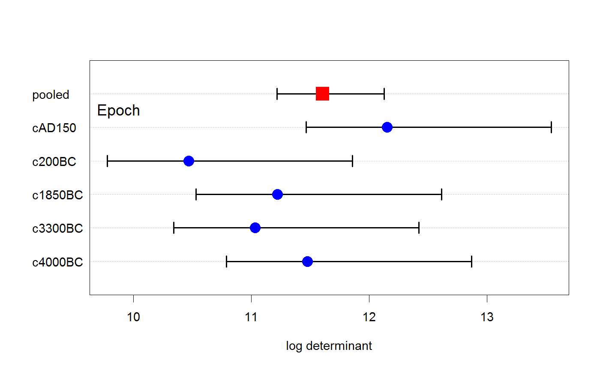
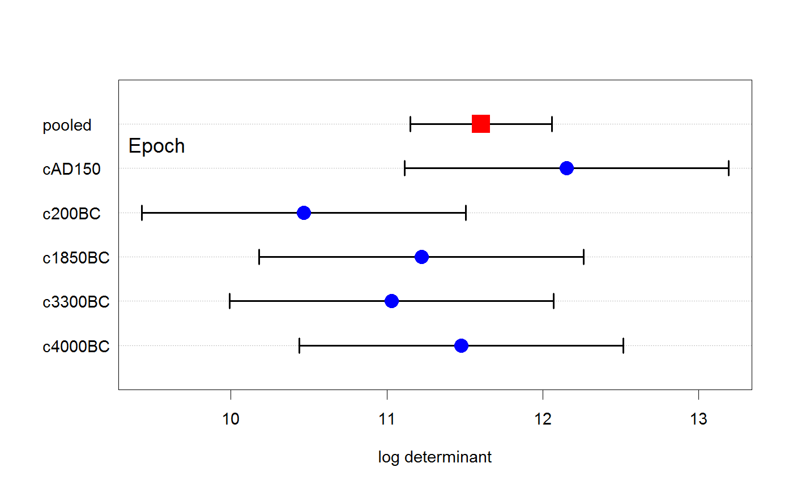
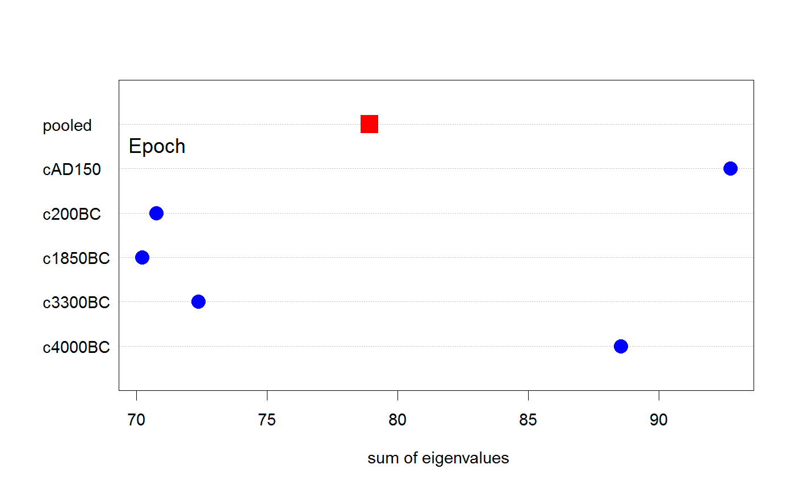
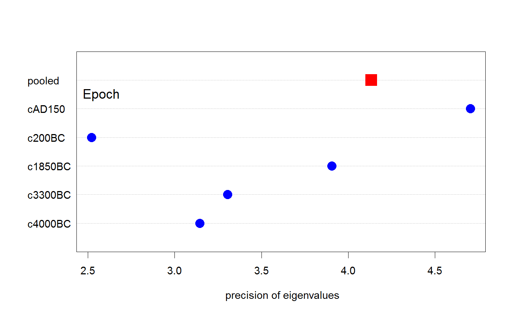

Plot for Box's M test and generalizations
This function creates a simple dot chart showing the contributions (log determinants) of the various groups to Box's M test for equality of covariance matrices.
Because Box's M test is based on a specific function (log determinant) of the covariance matrices in the groups compared to the pooled covariance matrix, this function also also allow plots of other measures based on the eigenvalues of these covariance matrices.
# S3 method for boxM plot(x, gplabel = NULL, which = c("logDet", "product", "sum", "precision", "max"), log = which=="product", pch = c(16, 15), cex = c(2, 2.5), col = c("blue", "red"), rev = FALSE, xlim, conf=0.95, method=1, bias.adj=TRUE, lwd=2, ...)
Arguments
| x | A |
|---|---|
| gplabel | character string used to label the group factor. |
| which | Measure to be plotted. The default, |
| log | logical; if |
| pch | a vector of two point symbols to use for the individual groups and the pooled data, respectively |
| cex | character size of point symbols, a vector of length two for groups and pooled data, respectively |
| col | colors for point symbols, a vector of length two for the groups and the pooled data |
| rev | logical; if |
| xlim | x limits for the plot |
| conf | coverage for approximate confidence intervals, |
| method | confidence interval method; see |
| bias.adj | confidence interval bias adjustment; see |
| lwd | line width for confidence interval |
| ... | Arguments passed down to |
Details
Confidence intervals are only available for the default Box M test, using which="logDet".
See also
Examples
# Skulls data skulls.mod <- lm(cbind(mb, bh, bl, nh) ~ epoch, data=Skulls) skulls.boxm <- boxM(skulls.mod) plot(skulls.boxm, gplabel="Epoch")plot(skulls.boxm, gplabel="Epoch", bias.adj=FALSE)# other measures plot(skulls.boxm, which="product", gplabel="Epoch", xlim=c(10,14))plot(skulls.boxm, which="sum", gplabel="Epoch")plot(skulls.boxm, which="precision", gplabel="Epoch")plot(skulls.boxm, which="max", gplabel="Epoch")